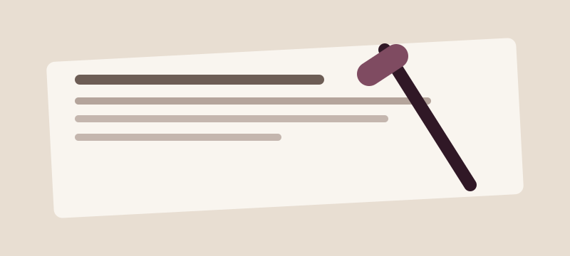
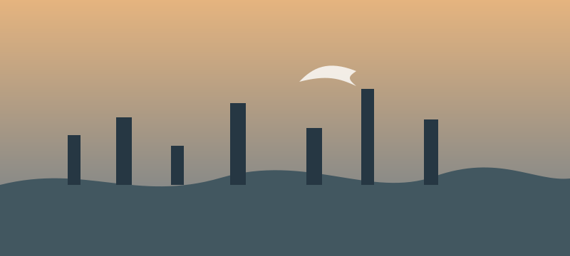
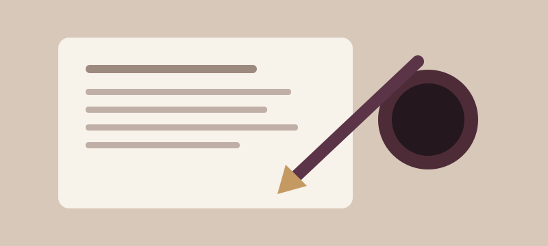

“Daha yaşanabilir
bir yarın için
insana, fikre ve projelere
inanıyorum.”

Hakkında
Hayata, insana ve geleceğe dair...
Aydın Coşkuntürk, 6 Ağustos 1962’de İstanbul’da doğdu. Kırklareli kökenlidir. Yazar, girişimci, proje geliştirici ve köşe yazarıdır.
Medya, mimarlık ve markalı çözümler alanlarında üretmekte; yazıları, kitapları, projeleri ve toplumsal bakış açısıyla farklı mecralarda çalışmalarını sürdürmektedir.
Daha Fazla Oku →

Projeler
Fikirden gerçeğe, daha iyi bir gelecek için...
Kitaplar
Yaşanmışlıklar, düşünceler, insan ve toplum üzerine...


Yazılar
Gündeme, hayata ve insana dair...

Siyasetin de Bir Ahlakı Var!
Toplum, siyaset ve değerler üzerine bir değerlendirme.
Yazıyı Oku →
Asıl Patron Kim
Yönetim, halk ve kamusal sorumluluk üzerine kısa bir düşünce metni.
Yazıyı Oku →
Yazı Arşivi
Köşe yazıları ve diğer metinler için büyüyen kişisel arşiv.
Arşivi Aç →İletişim
Fikirler, projeler ve iş birlikleri için...